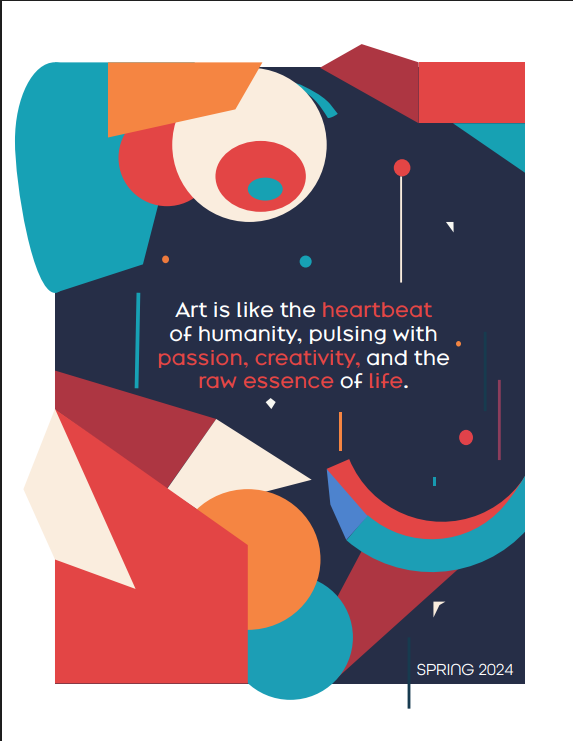
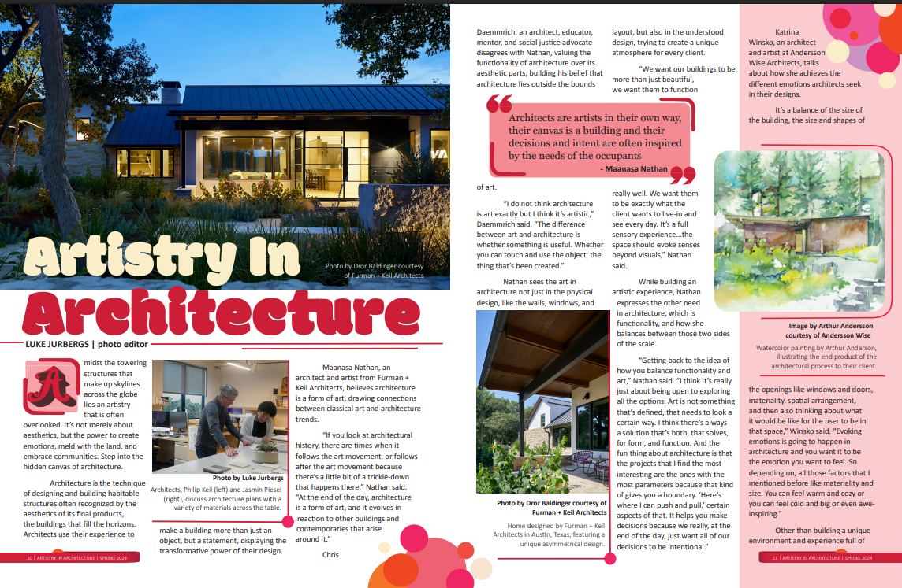
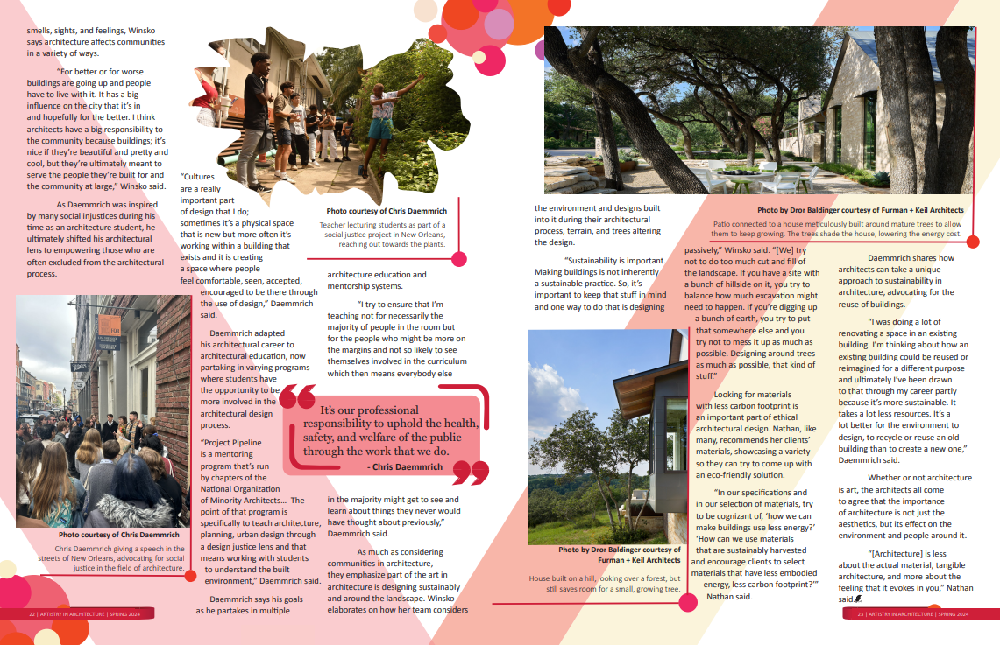
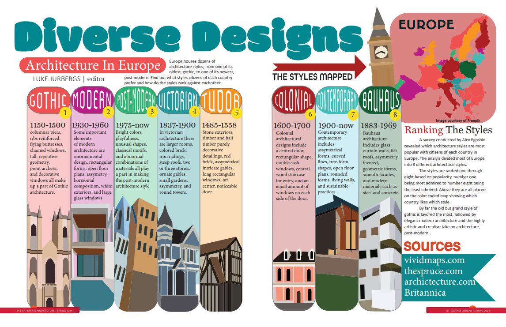
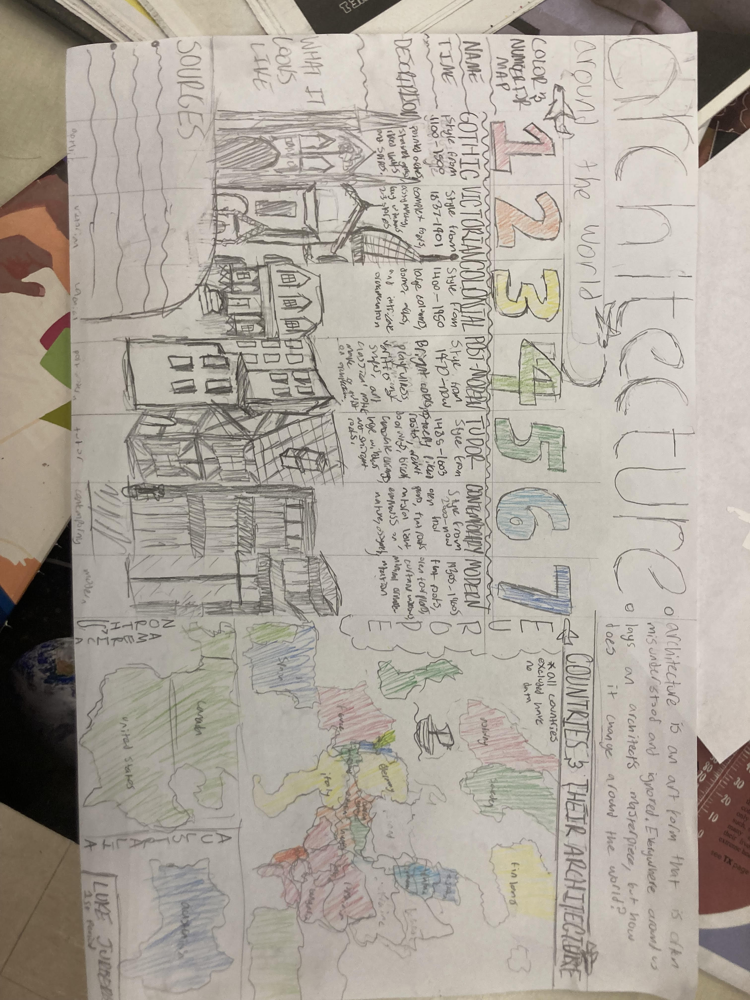

The Modern Palette is LASA's student-run art magazine. I contributed two pieces to the Spring 2024 issue as a freshman: a four-page feature article on architecture as art, and a two-page infographic on European architectural styles. Both were entirely self-directed.
Front and back covers of the Spring 2024 issue — bold geometric abstraction in the magazine's signature palette of navy, red, teal, and orange.
front cover — The Modern Palette, Spring 2024

back cover — "Art is like the heartbeat of humanity"The article covers three Austin architects with completely different views on whether architecture is art. Maanasa Nathan from Furman + Keil Architects argues yes. Katrina Winsko from Andersson Wise Architects talks about balancing emotion with function. Chris Daemmrich — architect, educator, and social justice advocate — disagrees with both, arguing architecture lives outside art because art doesn't need to be useful.
Getting the interviews meant reaching out to the firms myself, arranging the meetings, going to their offices, asking the questions, taking photos of their workspaces, and collecting press packages. The writing, layout, and photo editing were all done independently, without adult guidance. I was credited as photo editor.
The story doesn't land on a single answer — intentionally. Three smart people who do this work every day see it completely differently, and collapsing them into a conclusion would have been dishonest.

pages 20–21 — opening spread, Luke Jurbergs photo editor
pages 22–23 — Daemmrich and Winsko, closing spreadA two-page infographic mapping eight architectural styles across Europe — Gothic, Modern, Post-Modern, Victorian, Tudor, Colonial, Contemporary, and Bauhaus. Each style gets a timeline, key characteristics, and an illustrated building. A color-coded map shows which countries favor which style, based on a survey of citizens across the continent.
The infographic was fully designed and illustrated — I drew and planned it by hand first, then built the final version digitally.

pages 24–25 — Diverse Designs infographicHand-drawn planning sketch for the infographic — the full layout roughed out in pencil and colored pencil before going to digital. Buildings, map, numbered styles, sources, and editorial framing all worked out on paper first.

planning sketch — pencil + colored pencil, before going digital
front cover
back cover